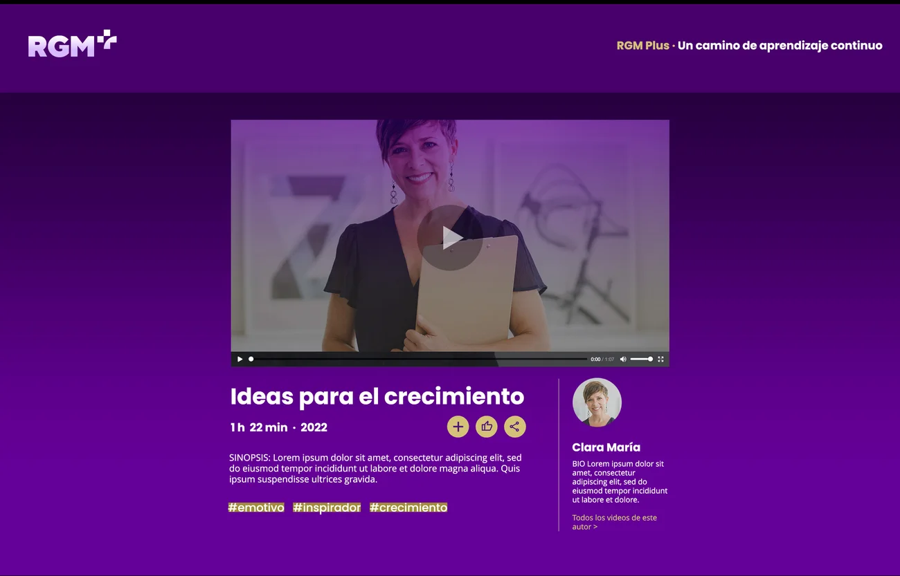

Membresía anual
u$s 50 pago único
Pago seguro con tarjeta a través de Stripe. El acceso dura 12 meses desde la fecha de pago.
Verificando tu acceso…
Miembro Activo / Beneficios
Sección exclusiva · Miembros Activos
RGM Plus, manuales, libros y cursos de perfeccionamiento para mentores. Un único pago, 12 meses de acceso.
Membresía anual
u$s 50 pago único
Pago seguro con tarjeta a través de Stripe. El acceso dura 12 meses desde la fecha de pago.
¿Ya sos Miembro Activo?
Ingresá el email con el que pagaste y te enviamos un enlace de acceso.
Miembro Activo / Beneficios
Sección exclusiva · Miembros Activos
“Ser parte es crecer juntos.” Cada mentor que invierte en la comunidad, expande la consciencia global.
RGM Plus · Manuales · Libros · Cursos
Ser Mentor Activo en la Red Global de Mentores significa asumir el compromiso de seguir creciendo, aprendiendo y perfeccionando el arte de acompañar a otros en su desarrollo humano y profesional. Para apoyar este camino de evolución continua, hemos reunido en este espacio una serie de recursos especialmente seleccionados para nuestra comunidad.
Portal
Contenidos exclusivos para mentores.
Academia Global RGM
Guías funcionales y de perfeccionamiento.
Editorial RGM
Para renovar tu conocimiento sobre la mentoría.
e-Learning
Cursos virtuales asincrónicos de la plataforma.
Estos recursos han sido diseñados para fortalecer tu criterio, ampliar tu mirada y acompañarte en el ejercicio profesional de la mentoría.
Gracias por ser parte activa de esta comunidad. Tu crecimiento como mentor impacta en el desarrollo de muchas otras personas.
Portal multimedia
Portal Multimedia con contenido de alto valor para un camino de aprendizaje continuo.
Ingresa GRATIS por ser un Miembro Activo
Ir a RGM+
e-Learning
Por ser Miembro Activo, tienes acceso gratuito a los siguientes cursos virtuales asincrónicos de la Plataforma de e-Learning.
Realiza un viaje fascinante a la Antigua Grecia para descubrir el nacimiento de la disciplina que transforma vidas: El Origen de la Mentoría
INGRESARExplora el ecosistema del desarrollo humano y descubre las fronteras, alcances y sinergias de las Disciplinas del Acompañamiento al Desarrollo Humano y Organizacional.
INGRESARMentoría en Acción · Tomos 1, 2 y 3
Origen: los Manuales de “Mentoría en Acción” (Tomos 1, 2 y 3), “El arte de acompañar conscientemente”. Por ser Miembro Activo, tienes acceso gratuito a los 68 templates, agrupados por tipo de herramienta.
Pica sobre «Descargar» para bajar cada template
Potencia tu práctica profesional y domina el arte del acompañamiento con nuestra formación exclusiva en Herramientas de Mentoría
INGRESARGrupo A · 11 templates
Grupo B · 10 templates
Grupo C · 13 templates
Grupo D · 7 templates
Grupo E · 10 templates
Grupo F · 10 templates
Grupo G · 7 templates
Transforma cada sesión en una fuente de maestría con nuestra formación especializada en Análisis de Casos. Porque analizar cada proceso de Mentoria realizado aporta a tu mejora profesional.
INGRESARTemplate · Documento Word
Completa la guía con tu propio caso y revisa tu práctica paso a paso.
DescargarEn breve estamos agregando más beneficios…